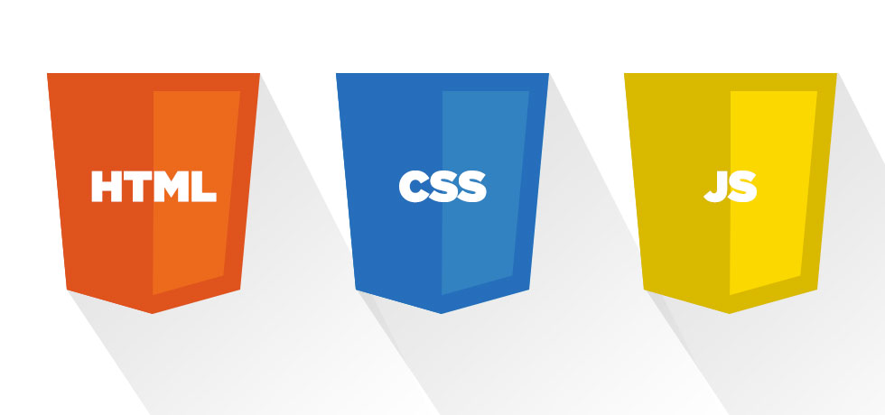

History of HTML, CSS, JavaScript
HTML 2:
Html was first developed in 1991 by a man of the name Sir Tim Berners-Lee. An actual real version of html was mot released to the public until 1995 as HTML 2.0. This new version that was relased in 1995 had many features added over the next 2 years. Link here.
Featutres:
- November 25, 1995: RFC 1867 (form-based file upload)
- May 1996: RFC 1942 (tables)
- August 1996: RFC 1980 (client-side image maps)
- January 1997: RFC 2070 (internationalization)
HTML 3
HTML 3.2[15] was published as a W3C Recommendation. It was the first version developed and standardized exclusively by the W3C, as the IETF had closed its HTML Working Group on September 12, 1996.[16] Initially code-named "Wilbur",[17] HTML 3.2 dropped math formulas entirely, reconciled overlap among various proprietary extensions and adopted most of Netscape's visual markup tags. Netscape's blink element and Microsoft's marquee element were omitted due to a mutual agreement between the two companies.[13] A markup for mathematical formulas similar to that in HTML was not standardized until 14 months later in MathML. Link here.
HTML 4
December 18, 1997 HTML 4.0 was published as a W3C Recommendation. It offers three variations: Strict, in which deprecated elements are forbidden Transitional, in which deprecated elements are allowed Frameset, in which mostly only frame related elements are allowed. Initially code-named "Cougar", HTML 4.0 adopted many browser-specific element types and attributes, but at the same time sought to phase out Netscape's visual markup features by marking them as deprecated in favor of style sheets. HTML 4 is an SGML application conforming to ISO 8879 – SGML.
April 24, 1998 HTML 4.0 was reissued with minor edits without incrementing the version number.
December 24, 1999 HTML 4.01 was published as a W3C Recommendation. It offers the same three variations as HTML 4.0 and its last errata were published on May 12, 2001.
May 2000 ISO/IEC 15445:2000 ("ISO HTML", based on HTML 4.01 Strict) was published as an ISO/IEC international standard. In the ISO this standard falls in the domain of the ISO/IEC JTC1/SC34 (ISO/IEC Joint Technical Committee 1, Subcommittee 34 – Document description and processing languages). After HTML 4.01, there was no new version of HTML for many years as development of the parallel, XML-based language XHTML occupied the W3C's HTML Working Group through the early and mid-2000s.
Link here.HTML 5
Main article: HTML5 October 28, 2014 HTML5 was published as a W3C Recommendation. November 1, 2016 HTML 5.1 was published as a W3C Recommendation. December 14, 2017 HTML 5.2 was published as a W3C Recommendation.
CSS
Cascading Style Sheets (CSS) is a style sheet language used for describing the presentation of a document written in a markup language like HTML.[1] CSS is a cornerstone technology of the World Wide Web, alongside HTML and JavaScript.
CSS is designed to enable the separation of presentation and content, including layout, colors, and fonts.[3] This separation can improve content accessibility, provide more flexibility and control in the specification of presentation characteristics, enable multiple web pages to share formatting by specifying the relevant CSS in a separate .css file, and reduce complexity and repetition in the structural content.
Separation of formatting and content also makes it feasible to present the same markup page in different styles for different rendering methods, such as on-screen, in print, by voice (via speech-based browser or screen reader), and on Braille-based tactile devices. CSS also has rules for alternate formatting if the content is accessed on a mobile device.
CSS has various levels and profiles. Each level of CSS builds upon the last, typically adding new features and typically denoted as CSS 1, CSS 2, CSS 3, and CSS 4. Profiles are typically a subset of one or more levels of CSS built for a particular device or user interface. Currently there are profiles for mobile devices, printers, and television sets. Profiles should not be confused with media types, which were added in CSS 2.
Link here.CSS 2
CSS level 2 revision 1, often referred to as "CSS 2.1", fixes errors in CSS 2, removes poorly supported or not fully interoperable features and adds already implemented browser extensions to the specification. To comply with the W3C Process for standardizing technical specifications, CSS 2.1 went back and forth between Working Draft status and Candidate Recommendation status for many years. CSS 2.1 first became a Candidate Recommendation on February 25, 2004, but it was reverted to a Working Draft on June 13, 2005 for further review. It returned to Candidate Recommendation on 19 July 2007 and then updated twice in 2009. However, because changes and clarifications were made, it again went back to Last Call Working Draft on 7 December 2010. CSS 2.1 went to Proposed Recommendation on 12 April 2011. After being reviewed by the W3C Advisory Committee, it was finally published as a W3C Recommendation on 7 June 2011.
Link here.CSS 3
"CSS3" redirects here. For other uses, see CSS3 (disambiguation). Unlike CSS 2, which is a large single specification defining various features, CSS 3 is divided into several separate documents called "modules". Each module adds new capabilities or extends features defined in CSS 2, preserving backward compatibility. Work on CSS level 3 started around the time of publication of the original CSS 2 recommendation. The earliest CSS 3 drafts were published in June 1999 Due to the modularization, different modules have different stability and statuses. Some modules have status and are considered moderately stable. At stage, implementations are advised to drop vendor prefixes.
Link here.CSS 4
There is no single, integrated CSS4 specification, because it is split into separate "level 4" modules. Because CSS3 split the CSS language's definition into modules, the modules have been allowed to level independently. Most modules are level 3—they build on things from CSS 2.1. A few level-4 modules exist (such as Image Values, Backgrounds & Borders, or Selectors), which build on the functionality of a preceding level-3 module. Other modules defining entirely new functionality, such as Flexbox, have been designated as "level 1". The CSS Working Group sometimes publishes "Snapshots", a collection of whole modules and parts of other drafts that are considered stable, interoperably implemented and hence ready to use. So far, five such "best current practices" documents have been published as Notes, in 2007, 2010, 2015, 2017, and 2018.
Link here.Java Script
Beginnings at Netscap
In 1993, the National Center for Supercomputing Applications (NCSA), a unit of the University of Illinois at Urbana-Champaign, released NCSA Mosaic, the first popular graphical Web browser, which played an important part in expanding the growth of the nascent World Wide Web beyond the NeXTSTEP niche where the WorldWideWeb had formed three years earlier. In 1994, a company called Mosaic Communications was founded in Mountain View, California and employed many of the original NCSA Mosaic authors to create Mosaic Netscape. However, it intentionally shared no code with NCSA Mosaic. The internal codename for the company's browser was Mozilla, a portmanteau of "Mosaic and Godzilla". The first version of the Web browser, Mosaic Netscape 0.9, was released in late 1994. Within four months it had already taken three-quarters of the browser market and became the main web browser for the 1990s. To avoid trademark ownership problems with the NCSA, the browser was subsequently renamed Netscape Navigator in the same year, and the company took the name Netscape Communications. Netscape Communications realized that the Web needed to become more dynamic. Marc Andreessen, the founder of the company, believed that HTML needed a "glue language" that was easy to use by Web designers and part-time programmers to assemble components such as images and plugins, where the code could be written directly in the Web page markup.
In 1995, Netscape Communications recruited Brendan Eich with the goal of embedding the Scheme programming language into its Netscape Navigator. Before he could get started, Netscape Communications collaborated with Sun Microsystems to include Sun's more static programming language, Java, in Netscape Navigator so as to compete with Microsoft for user adoption of Web technologies and platforms. Netscape Communications then decided that the scripting language they wanted to create would complement Java and should have a similar syntax, which excluded adopting other languages such as Perl, Python, TCL, or Scheme. To defend the idea of JavaScript against competing proposals, the company needed a prototype. Eich wrote one in 10 days, in May 1995.
Although it was developed under the name Mocha, the language was officially called LiveScript when it first shipped in beta releases of Netscape Navigator 2.0 in September 1995, but it was renamed JavaScript when it was deployed in the Netscape Navigator 2.0 beta 3 in December. The final choice of name caused confusion, giving the impression that the language was a spin-off of the Java programming language, and the choice has been characterized as a marketing ploy by Netscape to give JavaScript the cachet of what was then the hot new Web programming language.
There is a common misconception that JavaScript was influenced by an earlier Web page scripting language developed by Nombas named Cmm (not to be confused with the later C-- created in 1997). Brendan Eich, however, had never heard of Cmm before he created LiveScript. Nombas did pitch their embedded Web page scripting to Netscape, though Web page scripting was not a new concept, as shown by the ViolaWWW Web browser. Nombas later switched to offering JavaScript instead of Cmm in their ScriptEase product and was part of the TC39 group that standardized ECMAScript. Link here.